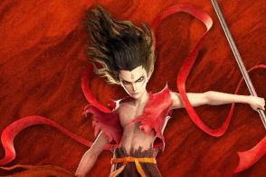
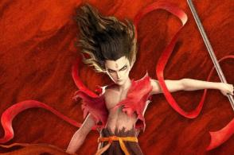
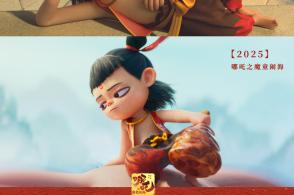
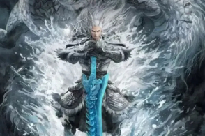
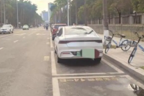
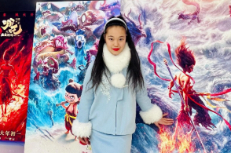

首页
要闻
武汉
财经
科技
热问
更多
搜索
客户端
游戏
无障碍
快捷访问
登录
电视剧
娱乐
综艺
体育
NBA
国际
军事
汽车
房产
教育
健康
视频
游戏
眼界
足球
科学
数码
元梦之星
电影
电竞
历史
育儿
无畏契约
云游戏
理财
股票
人民视频
天气
四川一黑社会组织暴力垄断废纸回收，涉足赌场、KTV被打掉，为何会盯上收废纸？
神斗斗💤
：核心就两个字——搞钱。底层黑社会成员，才会主要在乎风光和面子，思想停留在学校期间的“不良少年”和港片“古惑仔”的阶段。有话语权的黑社会核心成员，主要在乎的是利益，唯利是图就是他们最好的写照，只要能挣钱的，多捞一笔又何乐而不为呢？具体盯上的原因有这些：1、废纸行业上游从业人员较弱势，容易打压废纸再生利
4岁网红“瑶一瑶小肉包”60秒广告报价55万，这种千万级别的网红一年能挣多少钱？
老运营义成
：千万粉丝账号，1年1000万是很容易的。1、比如：瑶一瑶小肉包，粗略算一算。来自星图的数据，近90天星图视频5+，单期按照50万来算。3个月的广告收入：250万。那么一年算下来，也就是1000万。（仅为个人粗暴简单推测，仅为参考）而除了广告，网红们还有很多其他的收入方式。2、瑶一瑶小肉包非常克制，放
“好房子”标准发布，要加阳台、室内挑空空间等，对买房者有何好处？
JimmyChen
：这次北京发布的关于“好房子”的技术要点中，明确了在阳台、室内挑空空间、底层架空层、风雨连廊、邻里空间、外立面品质……等方面的技术要求和标准。其目的在于供给侧进行改革，提升住房品质，改善居住条件。其实这个所谓的“好房子”，就是最近2年被炒得很火的“第四代住宅”。而第四代住宅的一个标志性建筑形态，就是两
《哪吒2》票房冲破百亿大关，这个奇迹诞生有哪些“天时地利人和”？能复制吗？
彩虹之上
：《哪吒2》这个百亿传奇，主要是饺子的团队耐得住寂寞，最终成片质量过硬，另外观众报复性观影也是重要的因素。100亿一、天时：天堂与地狱在2024年终岁尾的时候，互联网上在连篇累牍的讨论电影这个行业是不是已经死掉了，因为在去年整个大盘十年新低的425亿，无论如何都指向一个结论，影视寒冬。其实大盘的萎缩最

《哪吒2》成为首个破百亿票房的国产电影，单片百亿票房是什么概念？
彩虹之上
：这么说吧，在世界范围内从未有过《魔童闹海》这样的作品。一、国内啥情况《哪吒之魔童闹海》目前的100亿票房，比国内曾经的影史冠军《长津湖》的57亿几乎翻倍，而魔童最终的目标恐怕是三倍于原来的冠军。很重要的一点，魔童是扭转了中国电影市场靠涨价出票房的小英雄。从吴京的《战狼2》创下56亿的成绩，吸引了1.

男子划船时被座头鲸吞入口中，之后又被吐出，为何能死里逃生？纯粹是运气好吗？
神斗斗💤
：要说运气，男子的运气是不错，但并非好在“被鲸鱼吐出”这件事，而是好在：吞他的恰好是座头鲸。被座头鲸吞入口又被吐出来，不能叫“死里逃生”。因为这个结果并不是靠运气，而是座头鲸温顺的性格和特殊的身体构造，根本就不会对人类造成致命伤害——它们的喉咙太窄了，咽不下去！换句话说，假如你有一天不小心被座头鲸吞进
财政部将所持四大AMC公司股权全部无偿划转至中央汇金，如何理解这个操作？
之乎者也小鱼儿
：财政部将所持四大 AMC 公司股权全部无偿划转至中央汇金，这事儿可不简单，背后有着多方面的用意和影响。这四大 AMC，其实有新旧之分。最早的老四大里，中国华融已经划入中信集团，改名中国中信金融资产了。2011 年成立的中证金融，是经国务院同意、证监会批准设立的全国性证券类金融机构，主要给证券公司融资
《蛟龙行动》官宣“择日再与观众见面”，为何不直接说撤档？新剪的版本救得了票房吗？
彩虹之上
：结论：《蛟龙行动》撤档是一场事先张扬的离婚，发的这个声明，其实是为前面的一错再错买单，不说撤档是因为前面话说得太满，只能用这种委婉的表达方式，再上映不会有啥水花，巨亏已经定局。还是没顶住一、事先《红海行动》大火之后，博纳有充足的时间搞续集，林超贤在这中间为了证明自己的文戏能力，拍了一部文戏依然尴尬的
《哪吒2》被删减部分首度公开，会释放加长版吗？如果放映能冲多少票房？
不怕困难的王导演
：不会有加长版的，在中国上映的电影基本上都不会有加长版或者导剪版这种出现。对于在中国影院上映的电影，都需要走一个政府审核的流程。需要经过两次审核，一次是内容审核，一次是技术审核。内容审核就是看你这个电影的内容是否适合在影院播放，有没有反党反社会、有违公序良俗、血腥暴力的情节或者内容，如果有不适合的地方
泽连斯基拟对乌前总统波罗申科等人实施制裁，为何现在制裁？有哪些考虑？
阳光下的黑影
：泽连斯基政府今天宣布制裁的，主要有三个人：波罗申科、梅德韦丘克以及科洛莫伊斯基。这3人分别是什么来头呢？波罗申科大家应该很了解了：这位是乌克兰前总统，目前乌克兰最大反对党“欧洲团结党”的领导人，现任议会议员。正是波罗申科担任总统期间（2014-2019年）力主乌克兰全面倒向西方——他主导了乌克兰军队
《哪吒2》为什么说哪吒把土拔鼠食物再吃回去这段剧情，对应了《天道》丁元英所说的生存法则？
玉璎珞聊影视
：电影《哪吒2》，哪吒去收土拔鼠妖那一段，很多观众都被哪吒那一句“还吃，收你们来了”所逗笑，但鲜少有人发现，在片中，出现了电视剧《天道》的一句经典台词！之后哪吒把自己吐出来的土拨鼠食物再吃回去，正是他用实际行动，演绎了《天道》的这一句经典台词。01哪吒的“能”和”忍”因为一下子吃了太多迷迷眠眠丹，哪吒
英国首相称乌克兰加入北约不可逆，为何要与美国“唱反调”？英国说话管用吗？
之乎者也小鱼儿
：斯塔默称乌克兰加入北约不可逆，这看似与美国“唱反调”，但其实这里面有着复杂的利益博弈和英国自身的小算盘。作为老牌殖民主义国家，这就是英国人玩政治的“高明”之处，英国人在全球政治搅局方面，段位可比年轻的美国牛多了，主打一个不显山露水地捣乱拱火还让人觉得义正辞严。英国人不能保证让自己赢，但是绝对不会让自
切尔诺贝利核电站遭无人机夜袭发生爆炸，这会是谁干的？为何单派一架无人机来袭击？
阳光下的黑影
：从目前已知的信息来看，我们可以确认的一点就是，这次袭击绝对是有着明确计划的，并且进行了精确计算的无人机爆破。首先，这次袭击很明确的指向了第四反应堆防护体外围的“新石棺”。这个防护体是2016年才建成的大型拱形结构，旨在覆盖1986年事故后建造的老旧“石棺”，防止放射性物质扩散。为什么要修建这样一个新
导演饺子说《哪吒3》很难突破《哪吒2》，你认同吗？《哪吒3》怎么拍才能超越第二部？
观娱姜欢
：《哪吒3》很难突破，但不是不会突破！一定会出精品。今年我看《哪吒2》是选了一个4D厅，椅子随着天崩地裂摇了大半场，故事好看，那声光电的特效也非常给力，真是沉浸式观影，当《哪吒3》搬上电影屏幕时，饺子一定会交出一份令人满意的作品。从《哪吒1》到《哪吒2》，饺子这个团队死磕作品的态度，让观众们都看到了他

官方通报江秋莲被举报诈捐、偷税漏税、pos机套现等不实，举报她的人需要承担责任吗？
春树律师
：江秋莲被举报诈捐、偷税漏税、pos机套现等，闹得沸沸扬扬，每一件被举报的事项如果经查证属实可能她都要坐牢。不过官方已经通报这些都是不实消息，江秋莲并没有这些问题，因此她不需要坐牢。那么很多人不解，举报她的人需不需要承担责任呢？我的答案是：需要！有一种情况叫诬告陷害。我国《刑法》第二百四十三条规定：捏
《哪吒2》破百亿，出品方光线传媒开盘大涨，这一波还能涨多久？董事长是不是“赢麻”了？
溯流Pi
：光线传媒股价暴涨，春节后7个交易日累计涨幅超200%，8天6板涨超260%，股价走势确实惊为天人。光线传媒的这波疯涨，主要受《哪吒2》票房破百亿的短期催化驱动。随着票房预测持续上调（主流平台目前预测票房落点为160亿左右），叠加海外上映带来的增量预期，可能进一步刺激股价，支撑其股价在高位运行。哪吒2
为何《哪吒2》30岁及以上的观众占比超60%？长辈问一部动画片有什么好看的，我该说什么？
彩虹之上
：这个问题和《哪吒2》女性观众超过60%的问题一起说，30岁以上的观众多确实是有增量观众进场，尤其是40岁以上的在小哪吒的观众群体中比例异常的高，女性观众占60%这个数据，还没有超出正常误差，因为去年女性购票就已经占到了58%。根本停不下来一、增量观众不知道屏幕前的您以前有没有参加过神秘观影，就是一部
《哪吒2》票房破百亿，参与这种百亿大项目的制作真实体验如何？
午夜猴子
：大家好，我叫段磊，网名午夜猴子，我是一名数字水墨艺术家、插画师和小说家，也是《哪吒之魔童闹海》片头概念原画的创作者之一。所谓片头概念，就是在电影最开始水墨画风格的画面，这需要几个艺术家一起来合作，根据导演要求画出概念设计，然后其他组的老师根据这些素材来制作片头的回顾动画。很开心看到大家很喜欢片头的这

《哪吒之魔童闹海》中，申小豹非死不可吗？
夜景湛虚明
：申小豹设计出来，就是送死用的工具人。他唯一作用就是塑造人物和推动情节。申小豹一共三场戏。第一场，一出场，他就是化作人形，管申公豹一口一个哥。敲黑板，划重点，申公豹第一反应是，这孙子是谁啊？压根没认出来是弟弟。直到申小豹显出原形，申公豹才发现这是弟弟。认出弟弟之后，整个哪吒系列里阴沉脸的申公豹，难得脸
《哪吒2》成为首个破百亿票房的国产电影，未来可能做出像漫威那种大IP吗？
茜文
：我在我们IP授权群里问了一下这个问题，行业内人士们不是太看好《哪吒》这个IP能做成漫威的程度，毕竟群里也有漫威版权方在，我理解他们的观点，“一个大IP的形成不仅需要天时地利人和的爆火，还需要几十年甚至上百年的持续输出”。但是我倒是觉得也不能把这事一棒子打死，未来还是有可能做成漫威那种大IP的。有人认
北京发布“好房子”新标准，老破小有可能按照“好房子”标准改造吗？
贵重物品DR
：其实这么多年，北京市一直在持续推进老旧小区改造，我们之前看过给旧楼加电梯的那个著名的电视节目“向前一步”，就很好的看出来旧改的推动是多么的复杂。而从政策上来说，早在2023年发布的《北京市城市更新条例》就明确提出对老旧小区进行综合整治，包括节能改造、加装电梯、公共空间优化等，这与“好房子”标准中的绿
美国杜鲁门号航母在埃及附近与商船相撞，为何发生这种事故？被航母碰撞有什么后果？
阳光下的黑影
：这一次碰撞事故的确非常的“不同寻常”。因为相比于其他舰艇或者飞机经常发生各种各样的事故，历史上美军航母极少发生重大事故，特别是这种与商船直接撞上的事故，实在是太罕见了！自二战以来，能够明确查找到公开资料的，美军航母与其他舰船发生碰撞事故的案例，只有当年贝克纳普号巡洋舰与肯尼迪号航母相撞的事件，而这起
珠海7.3亿出让2万停车位20年经营权，各地“卖天”、“卖停车权”之后，还可能卖什么？
飞跃本屯
：卖天卖地卖大佛，这事的目的不是卖，而是贷。一切有理论收益的经营权都可以卖。近年来我国很多地方，多次出现出售某公共项目长期经营权的情况。20年停车权，30年天空经营权，30年乐山大佛摊位经营权等都是如此，于是产生了卖天卖地卖大佛的段子。并且地方政府往往要求竞拍方需要在3年内就支付全部款项。如果从单纯经

千万粉丝网红“瑶一瑶”从出生就面对镜头做自媒体，这对她有负面影响吗？会过于早熟吗？
啥都不明白
：我也是家长，普通百姓。随便说一说。当别家娃还在和尿布斗智斗勇时，这位网红娃娃已经被父母教会了“三秒落泪换爆款、歪头杀收割嘉年华”的财富密码，直接全家走上了自媒体新赛道。这不是养育，这是大号的《楚门的世界》，或者，是楚门秀和《创造营》的婴儿版联名款。普通小孩子的人生进度条：翻身→爬行→学步→上幼儿园。
“我是秦始皇，我复活了，告诉我如何重振大秦”，网友被DeepSeek逗乐，如何用AI玩出花活儿？
零基础不怕难
：AI技术为“秦始皇复活”这个梗带来了更多创意和娱乐化的可能性，结合AI工具的多种功能，可以试着玩玩下面这些“花活儿”：首先，想重振大秦雄风，就需要融合古今智慧：1、科技兴国：命徐福后人研发「蜃楼级」量子计算机，以机关术3D打印长城智能防御系统，用火药驱动磁悬浮战车。2、人才引进：派张良化身VC投资人
杭州“六小龙”之一群核科技申请上市，这条“龙”有何绝技？其他几条“龙”上市进展如何？
隆中探源
：最近港股AI 概念火爆，正好给了群核科技上市一个最佳时间窗口，群核科技选择港股上市，在于港股上市更加 的快捷，国内上市虽然估值较高，可以获得更大利益，但目前IPO处于停滞状态，要在A股上市，除非特批上市，否则排队就是一种煎熬，很有可能是在明年了。群核科技作为最近火的一塌糊涂的六小龙之一，最大特点就是
莫迪访美最先见了80后女情报总监，为何这样安排？美印情报领域合作有哪些可能性？
阳光下的黑影
：我始终认为，在未来国际政治的大舞台上，印度是一股不容小觑的力量。其对咱们的威胁能力，很有可能不输于美欧等传统对手。以这一次印度总理莫迪访美的安排为例。从公开层面来看，刚就任国家情报总监的加巴德有印度裔血统，又信仰印度教，莫迪首先会见她似乎是情理之中的——既可以激发印度国内民众的自豪感，又可以为国际社
女生发帖称7天刷了30多遍哪吒2，这可能吗？这波票房狂欢里，你见过哪些夸张的观影现象？
不怕困难的王导演
：完全有可能，影迷狂热起来是很可怕的。就拿正在热映的《哪吒2》来说，我从新闻媒体上看到：在德州万达影城（IMAX 广场店），有不少市民二刷、三刷《哪吒之魔童闹海》。乐陵大地巨幕影院经理李霞称，影院每天排片 29 场，《哪吒之魔童闹海》排片达 26 场，基本每场满座。《哪吒之魔童闹海》在新西兰预售火爆，

女子莫名成网贷紧急联系人频收催债短信，遇到这种事只能换号吗？怎么防范这种坑？
云淡
：如果莫名成为他人网贷的紧急联系人并频繁收到催债短信或电话，不必立刻换号，换号了，自己的很多地方的联系电话，如单位、银行、社交媒体、电子邮箱、业务系统等等，都要解绑重绑，很麻烦。所以，是哪个网贷平台来催收，你就直接致电平台客服，要求核实紧急联系人信息并删除自己的联系方式，部分平台支持通过提供手机号在后
12306部分火车票大幅打折，有的甚至低至1元，为何打折力度这么大？如何买到低价火车票？
热嬛嬛
： 看到这事第一时间还真挺震惊的，但是后来想想也合理。首先，打折力度大其实是因为“返空车”和客流不平衡。春运期间大家都扎堆往大城市跑，但返程时很多车次从大城市出发往小地方开的车厢空得能跳舞。比如北京到成都的K4219次硬座打2折只要47元，但全程要坐30多个小时，发车时间还是凌晨3点，这种“冷门时段+
等你来答
载10人渔船在韩国济州岛附近倾覆，该海域常有翻船事故发生，背后的原因是什么？
想看 1
邀请回答
写回答
《哪吒2》海外上映，真外国人能看懂吗？孙悟空和哪吒比，哪个更好理解？
想看 0
邀请回答
写回答
中国发现全球最古老鸟类，比始祖鸟出现时间还早2000万年，这是否要更新教科书了？
想看 0
邀请回答
写回答
网友称陪伴是最长情的告白，你印象最深的情人节是哪一次？经历过最浪漫的事是什么？
想看 0
邀请回答
写回答
济南一隧道频现多车连撞，专家称安全不是仅靠 “降速”，为何限速后车祸反而变多？
想看 0
邀请回答
写回答
我国新一轮找矿行动有重大突破，矿多了价格能打下来吗？会快速开发变现吗？
想看 0
邀请回答
写回答
网安公司称DeepSeek等大模型服务器近九成在“裸奔”，这有多危险？普通人怎么防？
想看 0
邀请回答
写回答
重庆燃气再被质疑收费异常遭罚款810万，为何再犯？燃气抄表猫腻没有办法制约吗？
想看 0
邀请回答
写回答
《哪吒2》女性观众占比大约60%，为何女性看得更多？还有哪些潜在观众会继续贡献票房？
想看 0
邀请回答
写回答
《哪吒2》被删减画面首度公开，这些片断只能作废吗？还可以有哪些妙用？
想看 0
邀请回答
写回答
中国富人为拿绿卡数百万人民币石沉大海，投资拿绿卡有多大成功率？跨国诉讼能拿回钱吗？
想看 0
邀请回答
写回答
女生疑遭班主任性侵后抑郁自杀，如何避免孩子掉入长辈的“情爱陷阱”？
想看 0
邀请回答
写回答
河南170万玛莎拉蒂被套圈成功，赢家获1年使用权，摊主亏了吗？万一车损坏了怎么办？
想看 0
邀请回答
写回答
越来越多老人不让子女知晓自己的存款，老年人该如何管理好钱财？给子女透露多少情况合适？
想看 0
邀请回答
写回答
广西百色、南宁先后爆出教师性侵学生事件，应该采取哪些措施避免类似事件再发生？
想看 0
邀请回答
写回答
高三女生自曝遭物理老师强迫发生关系，对方威胁要提刀杀人，遇到这种老师该如何寻求帮助？
想看 0
邀请回答
写回答
宇树机器人跳舞再次进化，怎么看起来比春晚表演强许多？春晚为何不用这款？
想看 0
邀请回答
写回答
首页
刷新
反馈
侵权投诉
提示
当前您处于未登录状态，未登录状态下腾讯广告无法为您在PC网站上提供个性化广告推荐服务，请登录后进行广告设置。
广告设置
更多
顶部